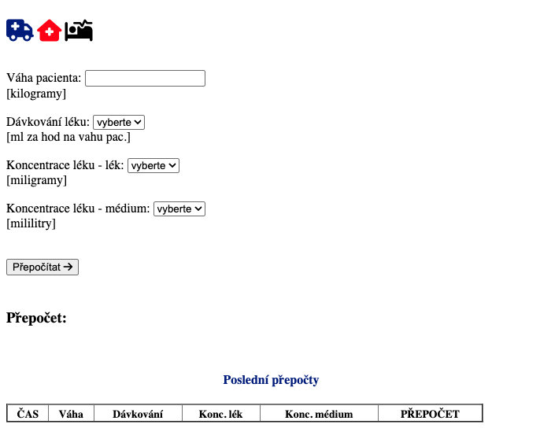
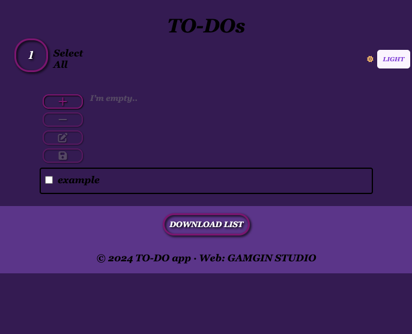
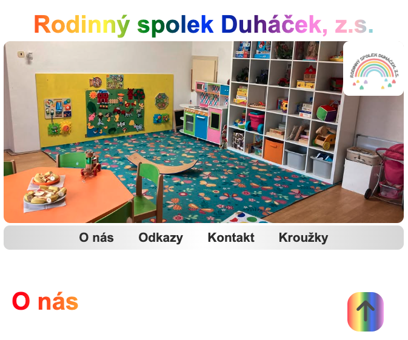
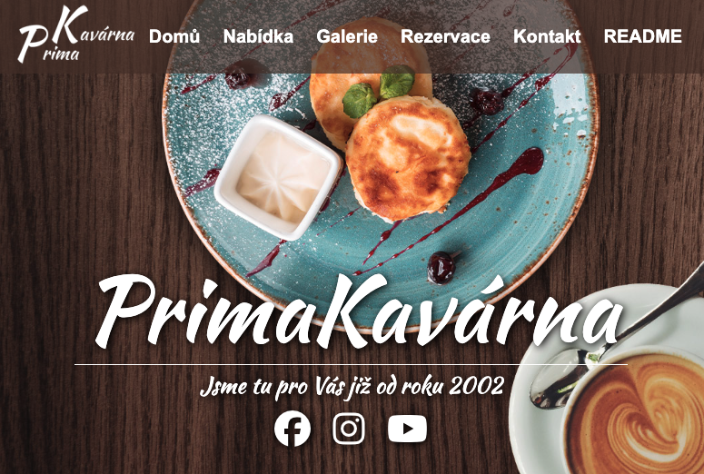
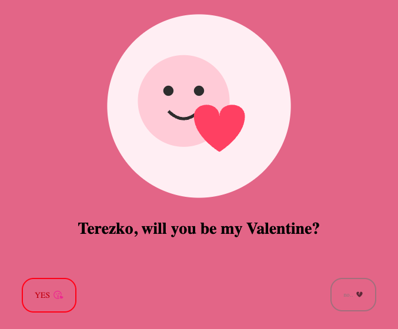

Níže si můžete prohlédnout mé nejnovější projekty. Některé vznikly ve spolupráci, jiné jsou zcela mou vlastní prací.
Níže si můžete prohlédnout mé nejnovější projekty. Některé vznikly ve spolupráci, jiné jsou zcela mou vlastní prací.





Klientské projekty mohou mít vlastní doménové adresy. Pokud si klient nepřeje zakoupit samostatnou doménu, projekt bude i nadále dostupný prostřednictvím mého webu.
Mé osobní projekty jsou vždy dostupné na adrese gamgin.net. Tato kolekce zahrnuje webové stránky i webové hry, které si můžete vyzkoušet. Rád programuji svobodně a experimentuji bez omezení.
Některé projekty jsou určeny začátečníkům v programování, kteří se chtějí naučit základy JavaScriptu. Vyvíjím také projekty zaměřené na vzdělávání o rostlinách a přírodě, protože věřím, že si příroda zaslouží více pozornosti.